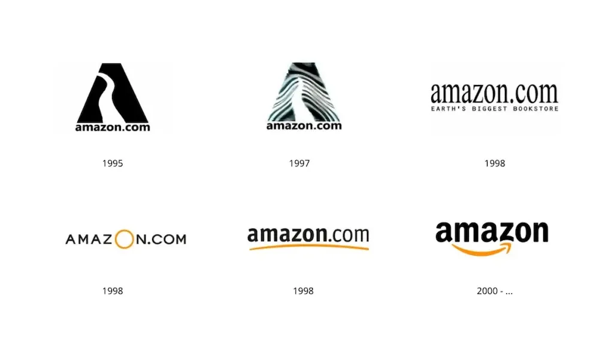
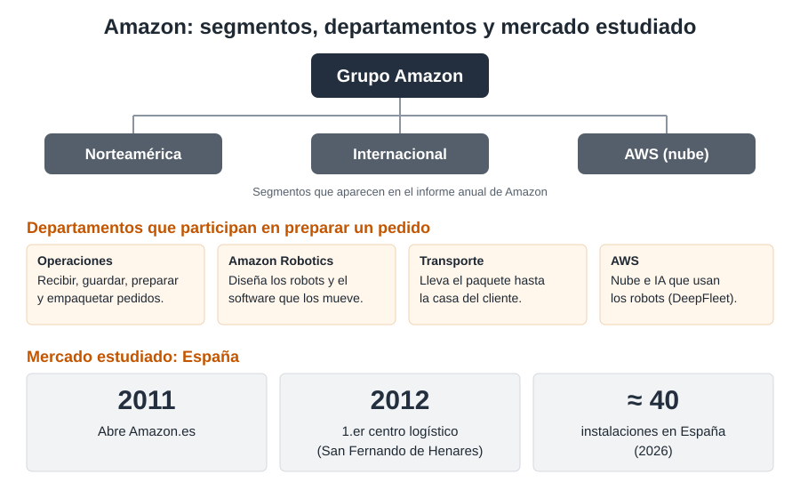

Amazon: de librería online a almacén robotizado
¿Cómo ha cambiado la tecnología la forma de trabajar, vender y generar valor de Amazon, y qué mejora digital propondría para su futuro?
En este proyecto me centro en un proceso: cómo se prepara un pedido y qué papel tiene la robótica en el almacén.
Identidad e historia
Cómo empezó
Jeff Bezos fundó Amazon en 1994 en Bellevue, Washington (Estados Unidos). La web abrió en 1995 como una librería online: vendía libros por Internet a cualquier persona con conexión, sin tener tiendas físicas. Al principio los pedidos se preparaban a mano y se enviaban por correo.
Cómo vende hoy
Hoy vende casi cualquier tipo de producto en su tienda online, donde también venden otras empresas (Marketplace). Además tiene suscripciones como Prime, dispositivos como Alexa o Kindle y servicios en la nube con AWS. Los pedidos se preparan en centros logísticos donde trabajan personas junto a robots.

Organización
Amazon no publica un organigrama completo. En su informe anual divide el negocio en tres segmentos: Norteamérica, Internacional y AWS. Las áreas que he podido documentar y que participan en la preparación de un pedido son:
Operaciones
Gestiona los centros logísticos: recibir, guardar, preparar y empaquetar pedidos.
Amazon Robotics
Diseña los robots y el software que mueven las estanterías y los paquetes.
Transporte
Lleva los paquetes desde el centro logístico hasta la casa del cliente.
AWS
Da la infraestructura en la nube y las herramientas de IA que usan los robots.
Presencia geográfica
El grupo Amazon vende en tiendas online de muchos países de América, Europa, Asia y Oriente Medio. Para este proyecto estudio el mercado español:
- 2011: abre Amazon.es.
- 2012: abre su primer centro logístico en España, en San Fernando de Henares (Madrid).
- 2026: según la propia empresa, tiene unas 40 instalaciones en España, entre centros de operaciones y oficinas.
Los datos son del grupo Amazon en España, no de una franquicia.
